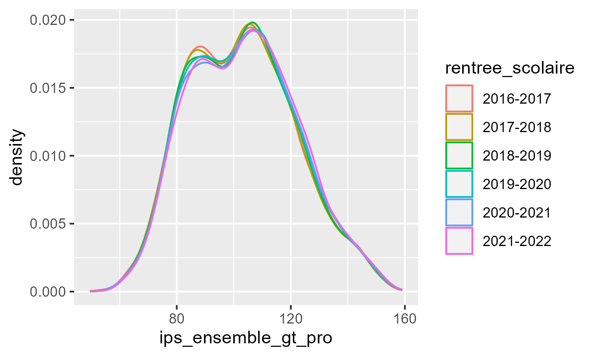

Write your answers directly in this .qmd file, which must compile without errors.
Make sure that your answers are unambiguous and that your code is annotated with comments.
You can write either in English or in French.
Save and render your file regularly to avoid any last-minute technical inconvenience.
The .qmd, the rendered .html or .pdf, and the data should be sent in a .zip by email louis.sirugue@psemail.eu
If you are not familiar with .zip files, first download and install winRAR. Then select your .qmd, .html/.pdf, and data files > right click > Add to archive > select “zip” and save.
Deadline: Sunday the 15th of October 2023, 18:00.
Late submissions will be penalized by half a point for each 30min beyond the deadline.
The cleanliness of the qmd and the html is worth 1 point.
The number of points associated with each question is indicative and may be subject to modifications.
The social position index
The indice de position sociale (IPS) is an index computed by the French Ministry of National Education to measure the socio-economic background of students in primary schools, middle schools, and highschools.
The IPS of students is given by the socio-professional category of their parents. 32 categories are considered, yielding 32 \(\times\) 32 = 1024 possible socio-professional compositions. Each socio-professional couple is attributed an IPS integer value from 38 (unemployed mother, no father) to 179 (mother teacher, father engineer). Several socio-professional couples can have the same IPS. For instance, having a mother policewoman and a father commercial employee, and having a mother technician and a father qualified worker, both yield an IPS of 110.
Since 2022, IPS statistics aggregated at the school level are published every year by the Ministry.
2) Download the dataset and import it in R. Show the structure of the data with the str() function. Do you think the class of the first variable is adequate? Justify your answer. (/1)
# Write your answer here.
Write your answer here.
3) What is the level of observation of the data? In other words, according to which variable(s) is each row uniquely identified? (/1)
# Write your answer here.
Write your answer here.
Datasets in which the same subjects are observed repeatedly over time are called “panel data”. A panel is said to be “balanced” if every subject is observed at each period. If at least one subject is not observed for at least one of the periods, the panel is said to be “unbalanced”.
4) How many periods are there in the data? How many high schools are there in the data? What fraction of high schools is observed at every period? Is the panel balanced? (/2)
# Write your answer here.
Write your answer here.
5) What socio-economic indicator does the standard deviation of the IPS within a school actually capture? Deduce from the data the reason(s) why this information can be missing. (/2)
# Write your answer here.
Write your answer here.
6) What are the 5 départements with the lowest average IPS in 2021-2022? (/1)
# Write your answer here.
Write your answer here.
7) Compute the mean, the standard deviation, the median, and the interquartile range of the IPS separately for public and private high schools. Comment. (/1)
# Write your answer here.
Write your answer here.
8) Reproduce the following plot. Find out why this distribution is multimodal. (/3)

# Write your answer here.
Write your answer here.
9) Find your high school in the data, and compute the share of high schools with a lower average IPS than your high school in 2021-2022. (/1)
# Write your answer here.
10) Compute the average IPS by type of high school. Use the functions sd() and pt() to compute their 99% confidence interval. If someone tells you that the IPS in their high school is 87, what type would you guess for that high school? (/3)
# Write your answer here.
Write your answer here.
11) For this question, omit the “polyvalent” high schools (LPO) to focus only on professional high schools and general & technological high schools. Based on the results of the previous questions, find a simple rule to predict the type of high school using only the IPS. Generate the resulting predictions and compute the share of correct predictions. Describe how you could improve the predictions (just explain your idea(s) in one or two sentences but don’t implement them). (/3)